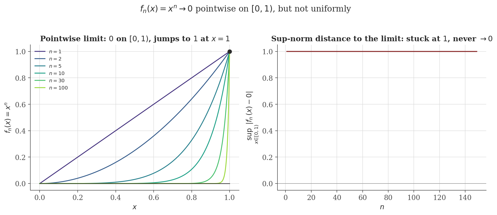
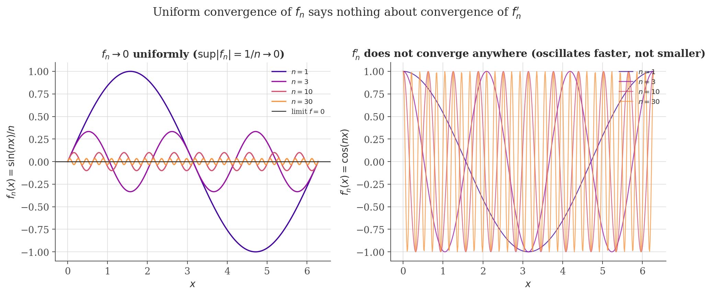

Convergence Theory
Disclaimer: These are my personal notes compiled for my own reference and learning. They may contain errors, incomplete information, or personal interpretations. While I strive for accuracy, these notes are not peer-reviewed and should not be considered authoritative sources. Please consult official textbooks, research papers, or other reliable sources for academic or professional purposes.
Contents
- Pointwise convergence, and why it is not enough
- Uniform convergence
- Continuity is preserved under uniform limits
- Interchanging limits with integrals
- Differentiation is the delicate case
- Series of functions and the Weierstrass M-test
- Dini and Stone–Weierstrass, without proof
- Computation
- Common pitfalls
- Connections
- References
1. Pointwise convergence, and why it is not enough
$f_n\to f$ pointwise on $D$ if for every $x\in D$, the sequence of numbers $f_n(x)\to f(x)$ in the sense of the sequences and series note: $\forall\epsilon>0\ \exists N(x,\epsilon)$ such that $n\geq N\Rightarrow|f_n(x)-f(x)|<\epsilon$.
The notation $N(x,\epsilon)$ is deliberate: pointwise convergence allows a completely different rate of convergence at every point. This is not a minor bookkeeping detail — it is exactly what breaks the properties one would hope carry over automatically from each $f_n$ to the limit $f$.
Each $f_n$ is continuous, yet the pointwise limit is $f(x)=0$ for $x<1$ and $f(1)=1$ — discontinuous at $x=1$, despite being built entirely from continuous functions.
Continuity of every $f_n$ did not survive the limit. The rest of this note is about the extra condition that repairs this — and precisely which other properties (integrals, derivatives) it does and does not repair.
2. Uniform convergence
$f_n\to f$ uniformly on $D$ if $\forall\epsilon>0\ \exists N(\epsilon)$ (no dependence on $x$) such that $n\geq N \Rightarrow |f_n(x)-f(x)|<\epsilon$ for every $x\in D$ simultaneously.
$f_n\to f$ uniformly on $D$ iff $\|f_n-f\|_\infty := \sup_{x\in D}|f_n(x)-f(x)| \to 0$ as a sequence of numbers.
Immediate from the definitions: "$|f_n(x)-f(x)|<\epsilon$ for every $x$ simultaneously, for $n\geq N$" is exactly "$\sup_x|f_n(x)-f(x)|\leq\epsilon$ for $n\geq N$," which is exactly $\|f_n-f\|_\infty\to0$ in the ordinary $\epsilon$-$N$ sense. This reformulation is often the easiest way to check or refute uniform convergence in practice: compute (or bound) one number per $n$, rather than reason about every $x$ separately.

3. Continuity is preserved under uniform limits
If $f_n\to f$ uniformly on $D$ and each $f_n$ is continuous at $a\in D$, then $f$ is continuous at $a$.
∎
This "$\epsilon/3$" pattern — insert and subtract a well-chosen intermediate quantity, then bound each of three pieces separately — is one of the most common proof techniques in analysis; here the intermediate quantity is a single, sufficiently-close-in-sup-norm member $f_N$ of the sequence itself.
4. Interchanging limits with integrals
If $f_n\to f$ uniformly on $[a,b]$ and each $f_n$ is (Riemann) integrable, then $f$ is integrable and $\lim_{n\to\infty}\int_a^b f_n(x)\,dx = \int_a^b f(x)\,dx$.
(Integrability of $f$ itself is a separate, purely Riemann-integration-theory fact — a uniform limit of Riemann-integrable functions on a bounded interval is Riemann-integrable — not reproved here; see Rudin, 1976, Thm. 7.16.) ∎
The bound $(b-a)\|f_n-f\|_\infty$ makes the mechanism explicit: uniform convergence controls the worst-case pointwise error uniformly across the whole interval, which is exactly what is needed to control an integral (an average, weighted by length) of that error. Pointwise convergence alone gives no such control — the standard counterexample is a sequence of tall, thin "bump" functions with height $n$ and width $1/n^2$ sliding across $[0,1]$: pointwise limit $0$ everywhere, but $\int_0^1 f_n = n/2\to\infty\neq\int_0^1 0$.
5. Differentiation is the delicate case
Uniform convergence of $f_n\to f$ is not enough to conclude $f_n'\to f'$ — differentiation needs its own, stronger hypothesis:
If $f_n\to f$ pointwise on $[a,b]$, each $f_n$ is differentiable, and $f_n'\to g$ uniformly on $[a,b]$, then $f$ is differentiable with $f'=g$.
(Proof omitted — it goes through the Mean Value Theorem applied to $f_n-f_m$ and is a differentiation-theory argument in its own right; see Rudin, 1976, Thm. 7.17.) The hypothesis is on the derivatives' convergence, not the functions' — and the gap between the two is not a technicality:

6. Series of functions and the Weierstrass M-test
A series of functions $\sum f_n$ converges uniformly if its partial sums $S_N=\sum_{n\leq N}f_n$ do, in the sense of Section 2. The most common practical tool for establishing this without computing the limit:
If $|f_n(x)|\leq M_n$ for all $x\in D$ and $\sum M_n$ converges, then $\sum f_n$ converges uniformly on $D$.
This closes a citation left open in the sequences and series note: term-by-term differentiation of a power series strictly inside its radius of convergence is justified by applying the M-test to the differentiated series (which has the same radius of convergence, by comparing $\limsup|nc_n|^{1/n}=\limsup|c_n|^{1/n}$), giving uniform convergence on any closed sub-interval, which is exactly the hypothesis Section 5's theorem needs.
7. Dini and Stone–Weierstrass, without proof
Two further results are worth knowing precisely, though proving them is beyond this note's scope:
If $f_n\to f$ pointwise on a compact set $K$, each $f_n$ and $f$ are continuous, and the convergence is monotone ($f_n(x)$ increasing or decreasing in $n$, for each fixed $x$), then the convergence is in fact uniform.
(See Rudin, 1976, Thm. 7.13.) Monotonicity plus a continuous limit is enough to upgrade pointwise to uniform — notably, $f_n(x)=x^n$ on $[0,1]$ satisfies monotonicity and pointwise convergence but is excluded by this theorem precisely because its limit is not continuous, consistent with Section 1.
If $X$ is compact and $\mathcal{A}\subseteq C(X)$ is an algebra of continuous functions that separates points and contains the constants, then $\mathcal{A}$ is dense in $C(X)$ under the sup norm.
(See Rudin, 1976, Thm. 7.32.) Specialized to $X=[a,b]$ and $\mathcal{A}=$ polynomials, this says every continuous function on $[a,b]$ is a uniform limit of polynomials — the density statement is precisely about the mode of convergence developed in this note, not merely pointwise approximation.
8. Computation
The figures above are generated by convergence/generate_figures.py. The snippet below verifies the sup-norm rate for a genuinely uniformly convergent sequence, and checks the Weierstrass M-test's tail bound numerically for $\sum x^n/n^2$ on $[-1,1]$.
import numpy as np
# A genuinely uniformly convergent sequence: f_n(x) = x/n on [0,1]
for n in (1, 10, 100, 1000):
x = np.linspace(0, 1, 1000)
sup_norm = np.max(np.abs(x / n))
print(f"n={n:5d}: sup|f_n - 0| = {sup_norm:.6f} (predicted 1/n = {1/n:.6f})")
# M-test: sum x^n/n^2 on [-1,1], M_n = 1/n^2
x = np.linspace(-1, 1, 2000)
S_ref = sum(x**n / n**2 for n in range(1, 2000)) # proxy for the limit
for N in (5, 20, 100):
S_N = sum(x**n / n**2 for n in range(1, N + 1))
sup_err = np.max(np.abs(S_N - S_ref))
tail_bound = sum(1 / n**2 for n in range(N + 1, 2000))
print(f"N={N:4d}: sup|S_N - S| = {sup_err:.3e} M-test tail bound = {tail_bound:.3e}")
Actual output:
n= 1: sup|f_n - 0| = 1.000000 (predicted 1/n = 1.000000)
n= 10: sup|f_n - 0| = 0.100000 (predicted 1/n = 0.100000)
n= 100: sup|f_n - 0| = 0.010000 (predicted 1/n = 0.010000)
n= 1000: sup|f_n - 0| = 0.001000 (predicted 1/n = 0.001000)
N= 5: sup|S_N - S| = 1.808e-01 M-test tail bound = 1.808e-01
N= 20: sup|S_N - S| = 4.827e-02 M-test tail bound = 4.827e-02
N= 100: sup|S_N - S| = 9.450e-03 M-test tail bound = 9.450e-03Both match to displayed precision: $f_n(x)=x/n$'s sup-norm error is exactly $1/n$ (contrast with Section 2's figure, where the analogous quantity for $x^n$ never shrinks at all), and the M-test's tail bound is not merely an upper bound in this example but numerically indistinguishable from the actual sup-norm error — the proof's inequality is close to tight here.
9. Common pitfalls
None of these transfer from pointwise convergence alone (Section 1's example kills continuity; the sliding-bump example in Section 4 kills the integral interchange). Uniform convergence repairs continuity and the integral interchange; differentiation needs the strictly stronger hypothesis of Section 5 on the derivatives themselves.
Uniform continuity (see the continuity note, Section 7) is a property of a single function on a set: one $\delta$ works at every point. Uniform convergence is a property of a sequence of functions: one $N$ works at every point. They are not the same claim about the same kind of object, despite "uniform" doing structurally similar work in both (removing a dependence on a location variable — $x$ in one case, the index in the other).
$f_n(x)=x^n$ is not uniformly convergent on $[0,1)$ or $[0,1]$ (Section 1), but restricted to $[0,1-\delta]$ for any fixed $\delta>0$, it converges uniformly to $0$ (the sup norm there is $(1-\delta)^n\to0$). Always state the domain when claiming or denying uniform convergence.
Uniform (sup-norm) convergence is the strongest common mode, but far from the only one used in practice: the causal $\mathrm{MA}(\infty)$ representation constructed in the time series note uses mean-square convergence ($E[(X_T-\sum_{j<T}\phi^j\varepsilon_{t-j})^2]\to0$), a genuinely different — and, for that construction, more natural — notion, neither implied by nor implying uniform convergence in general.
10. Connections
- Sequences and series. Every proof in this note reduces uniform statements about functions to the Cauchy criterion and completeness arguments for ordinary numerical sequences proved there — nothing here required a new foundational axiom.
- Continuity and limits. Uniform continuity and uniform convergence, clarified as distinct in the pitfalls above, nonetheless interact: Dini's theorem (Section 7) needs continuity of the limit as a hypothesis, and the M-test's uniform-Cauchy argument mirrors that note's Bolzano–Weierstrass-based proof of the compact uniform-continuity theorem.
- Integration and Taylor series. Section 4's integral-interchange theorem and Section 6's power-series differentiation both underpin the (previously merely cited) legitimacy of manipulating Taylor series term by term within their radius of convergence.
11. References
- Rudin, W. (1976). Principles of Mathematical Analysis (3rd ed.). McGraw-Hill.
- Royden, H. L., & Fitzpatrick, P. M. (2010). Real Analysis (4th ed.). Pearson.
- Abbott, S. (2015). Understanding Analysis (2nd ed.). Springer.